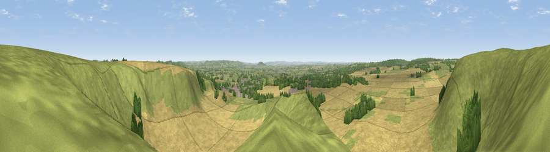

Viewpoint near Mere
#12513 in England · top 19% of its area beats it · near MereWhere it is
The exact computed spot (ST 80825 34175). Click the marker for map links.
The view, rendered

A 360° render of this exact spot computed from the terrain model, tree cover and land cover — summer colours, afternoon light, calibrated against photographs of famous viewpoints. Real trees, hedges and buildings will differ in detail.
The panorama
Grey silhouette: terrain skyline in each direction (720 bearings, Earth curvature and refraction included). Dashed green: skyline with trees (+15 m) and buildings (+8 m) as obstacles. Blue strip: how far the ground is visible on each bearing.
Where the view opens
Wedge length = distance to the farthest visible ground on that bearing (vegetation-aware). Rings at 10, 25 and 50 km.
What fills the view
49% cropland · 45% grassland · 5% woodland ·
Angular shares of the visible panorama (visual magnitude), not map area. Landscape diversity 0.39 (0–1 Shannon).
Key numbers
More beautiful places nearby
The staircase of upgrades: each row has a higher view potential than everything closer. Driving times are estimates from straight-line distance, calibrated against real road routing — check an actual route before setting out.
| Place | Direction | Drive | Score |
|---|---|---|---|
| Viewpoint near Mere | NW · 1 km | ~2 min | 61.5 |
| White Sheet Hill | NNW · 1 km | ~2 min | 64.9 |
| Viewpoint near Maiden Bradley | NNW · 4 km | ~9 min | 69.0 |
| Long Knoll | NNW · 4 km | ~9 min | 74.6 |
| Cley Hill | NNE · 11 km | ~21 min | 76.8 |
| Viewpoint near Lamyatt | W · 14 km | ~26 min | 77.8 |
| Viewpoint near Berwick St John | SE · 18 km | ~31 min | 78.2 |
| Beacon Batch | NW · 40 km | ~59 min | 79.4 |
51.10655, -2.27526 · source: screening · position refined by local search. Computed location — check access rights before visiting.